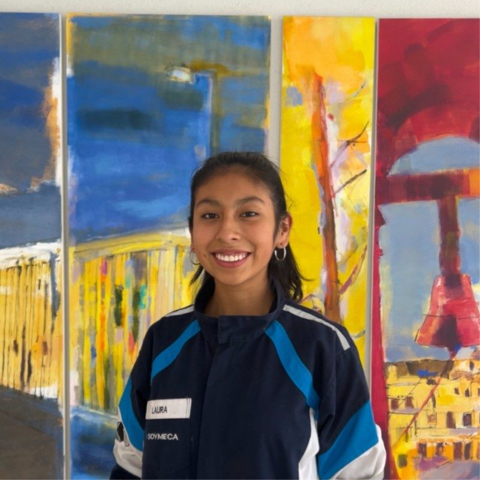
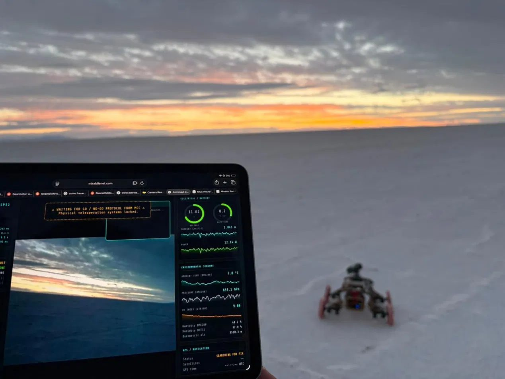
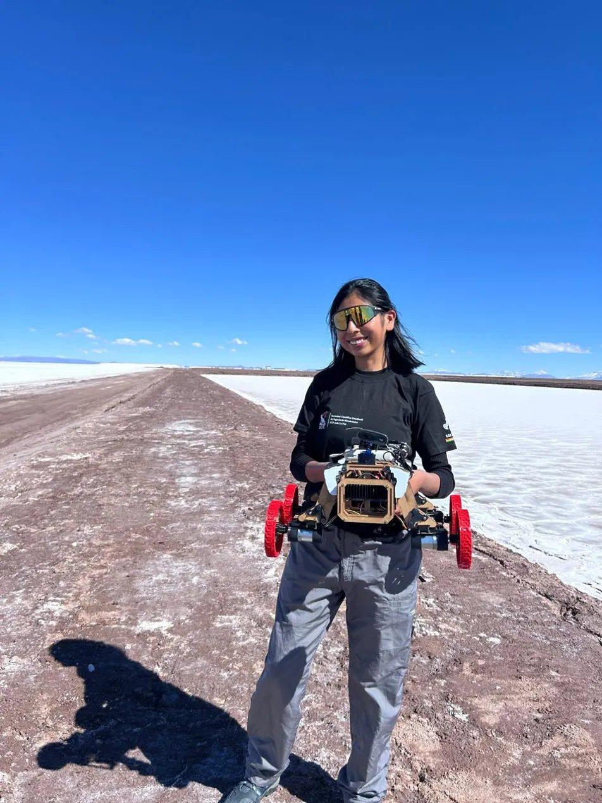
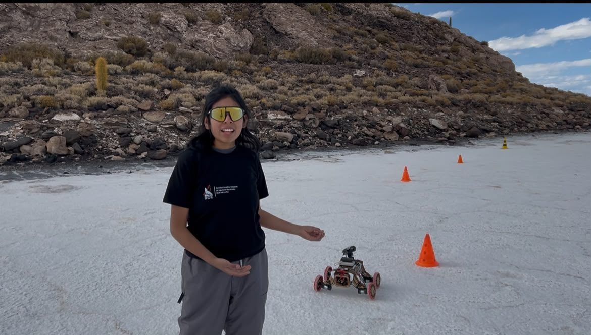
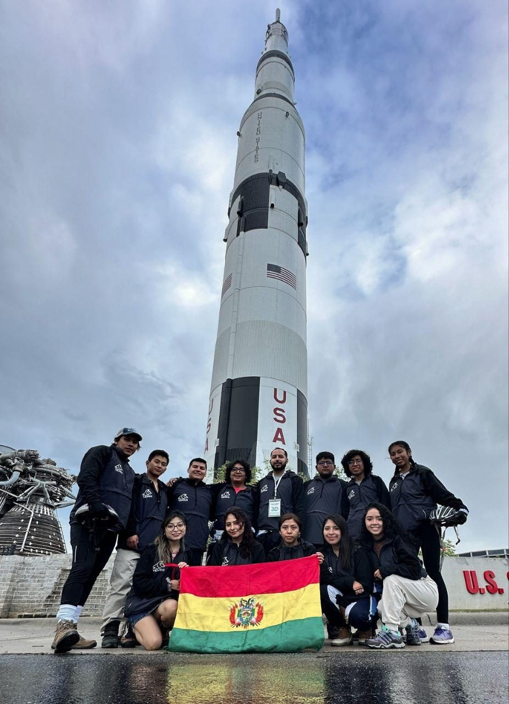
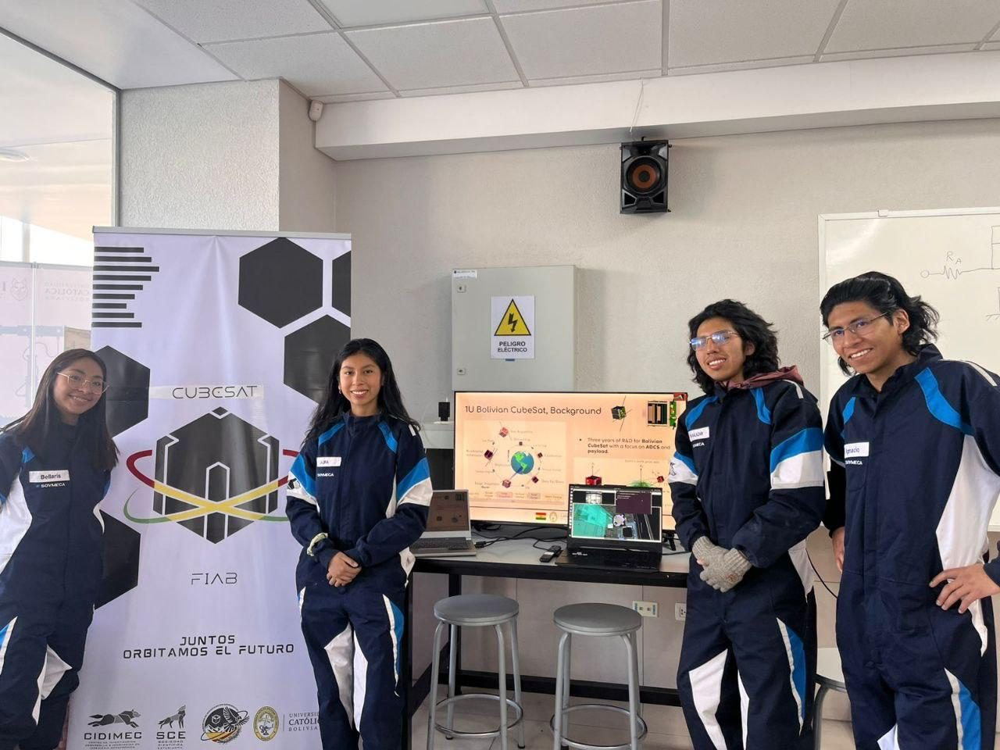
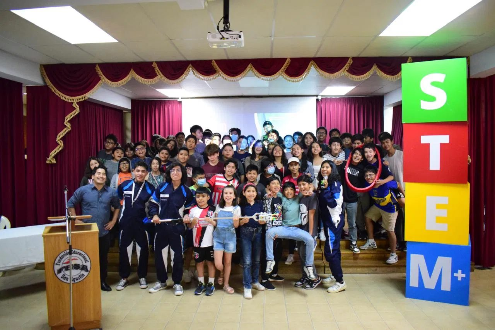
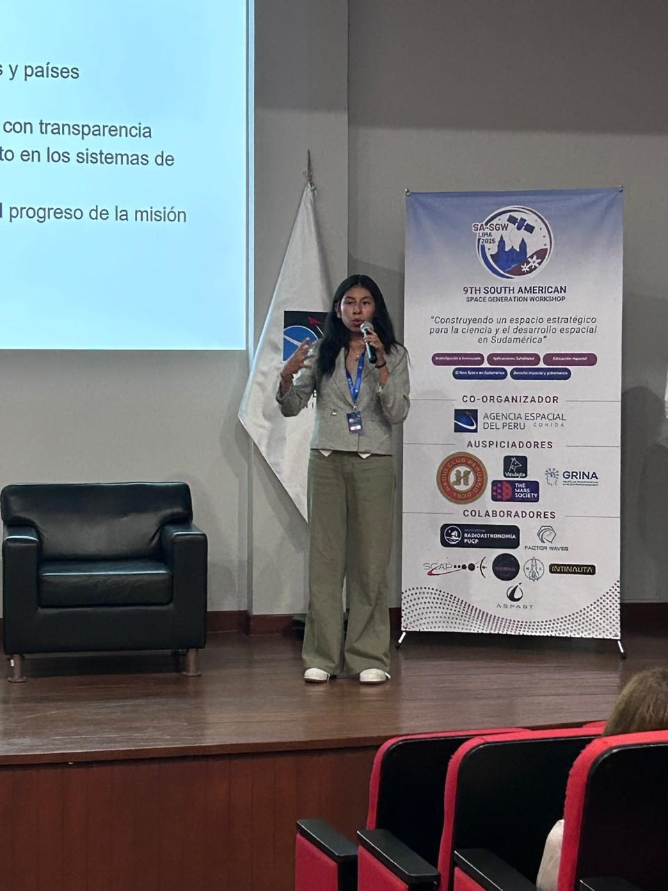

Nanosatélite
WaskiriSat-1
Primer nanosatélite boliviano. Integración y validación del firmware y las comunicaciones de la computadora de a bordo, e investigación sobre la carga útil.
Miembro oficial · On-Board Computer
Estudiante de Ingeniería Mecatrónica e investigadora. Lidero SALT, una misión análoga estudiantil en el Salar de Uyuni, y formo parte del equipo del nanosatélite WaskiriSat-1.


La idea nació de una pregunta: ¿cómo podría Bolivia participar en las investigaciones internacionales de misiones espaciales análogas? La convocatoria de Southeast Analog, una iniciativa de estudiantes de Georgia Tech, fue la oportunidad de responderla.
Lidero SALT (Salar Autonomous Laboratory for Testing) como investigadora principal (Principal Investigator), junto a Gabriel Rojas Silva, co-investigador principal y tutor del equipo. Formé el equipo con estudiantes de la Universidad Católica Boliviana y la Universidad Técnica de Oruro. Juntos desarrollamos RUMIPI, un rover teleoperado para pruebas en misiones análogas.


Durante la misión SEA I Thalassa, en agosto de 2026, integramos el sistema a las operaciones de Southeast Analog como su Proyecto 01. Durante tres días de operación, astronautas análogos controlaron el rover en el Salar de Uyuni desde el interior del hábitat, junto a estudiantes vinculados a Georgia Tech. Llegar ahí exigió meses de preparación, coordinación de equipos, integración de sistemas y resolución de problemas técnicos. No todo funcionó como esperábamos, y cada falla nos enseñó algo.
El desafío mayor no fue tecnológico. Las misiones análogas son una disciplina poco conocida en Bolivia, y esa falta de visibilidad impide que más estudiantes descubran cómo participar y reconozcan el potencial científico de nuestro propio territorio.
Abrir esta puerta requirió mucho esfuerzo, y no quiero que vuelva a cerrarse.
RUMIPI fue el primer paso para abrir las misiones análogas en el Salar de Uyuni. Para el próximo año preparamos una versión mejorada del rover. Mi objetivo es que SALT sea el punto de partida de nuevas misiones análogas, colaboraciones internacionales y oportunidades para estudiantes bolivianos, en un lugar de enorme valor natural y cultural que merece ser investigado con respeto.

Representar a Bolivia en el NASA Human Exploration Rover Challenge me enseñó que los logros importantes no son individuales. Los consiguen equipos capaces de adaptarse y encontrar soluciones cuando las condiciones son desfavorables. El segundo día mejoramos nuestro puntaje en 34 puntos, y eso nos valió el premio.
El proyecto no se quedó en la competencia. Como parte del reto, el equipo realizó actividades de divulgación STEM en Bolivia que llegaron a cerca de 6 000 niños y jóvenes, y esa experiencia se convirtió después en un artículo académico sobre educación STEM.
Primer nanosatélite boliviano. Integración y validación del firmware y las comunicaciones de la computadora de a bordo, e investigación sobre la carga útil.
Validación experimental de modelos de IA para clasificar imágenes satelitales RGB, con un banco óptico Hardware-in-the-Loop para el procesamiento a bordo.
Rover teleoperado operado desde el Salar de Uyuni durante la misión SEA I Thalassa de Southeast Analog.


De esa experiencia surgió un artículo académico sobre educación STEM. Hoy continúo la divulgación y el trabajo comunitario desde los cargos que ocupo:

Para mí, liderar es transformar ideas en acciones, conectar personas, compartir conocimiento y construir oportunidades que sigan creciendo más allá de nuestra propia participación. Los jóvenes no necesitamos esperar a que las oportunidades lleguen a nuestro país. También podemos buscarlas, construirlas y abrir caminos para quienes vienen después.